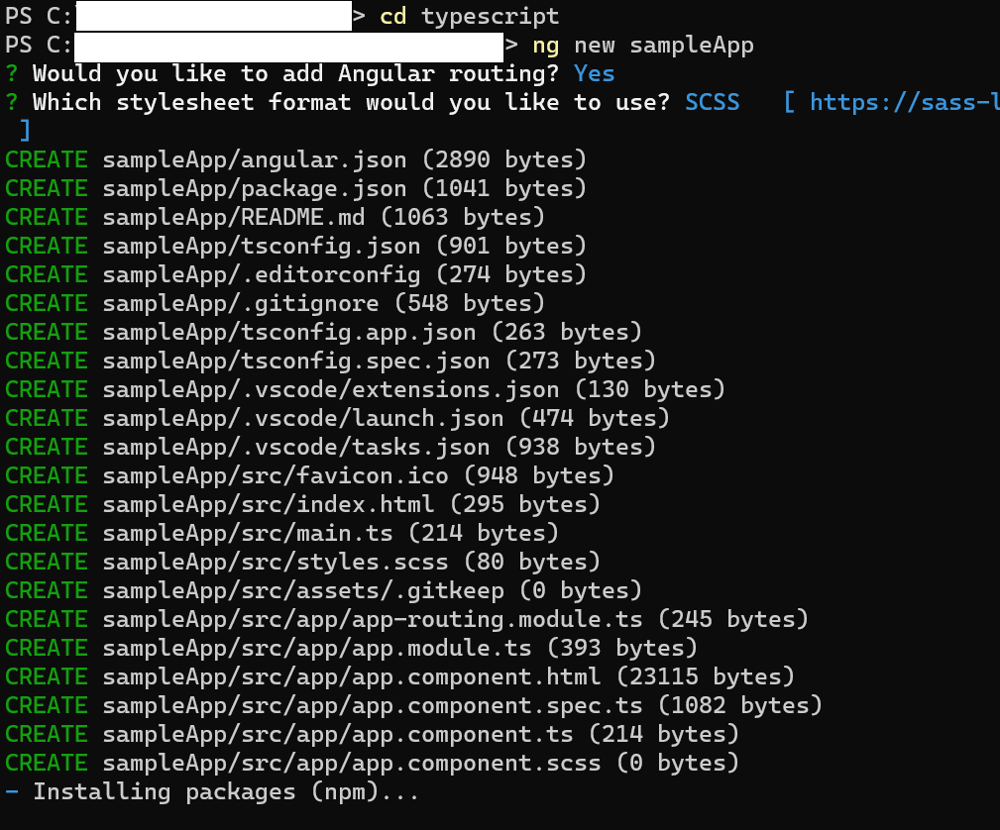
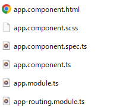
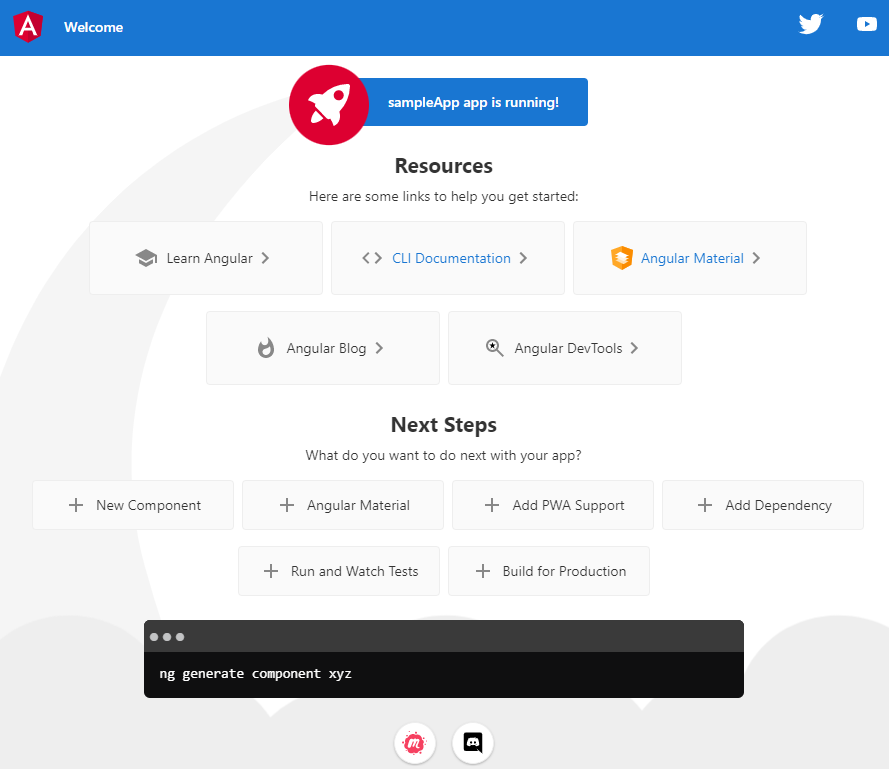

アプリを効率的に開発するためにフレームワークを使うことがあります。 私はプログラミングを勉強し始めたころにどんな役割があるのか想像できなかったため、同じような人を増やさないために記事を書きました。 今回の記事でフレームワークというものの働きがイメージできるかと思います。 記事ではプロジェクトを作成して中のコードを見るだけですので、TypeScriptを知らない方でも理解できます。
参考サイトからのコピペです。
プログラミングの「フレームワーク」とは、簡単に説明すると「Webアプリケーションやシステムを開発するために必要な機能があらかじめ用意された枠組み」のことです。 フレームワークを使えば、ゼロから開発に必要な機能を用意する必要がありません。 プログラミングでは、フレームワークを活用することが作業の効率化につながります。
Angular日本語ドキュメンテーションからのコピペです。
AngularはTypeScript上に作られた開発プラットフォームです。プラットフォームとしてAngularには次のことが含まれます： スケーラブルなウェブアプリケーションを構築するためのコンポーネントベースのフレームワーク ルーティング、フォーム管理、クライアントとサーバー間の通信など、さまざまな機能をカバーする、十分に統合されたライブラリのコレクション コードの開発、ビルド、テスト、更新を支援する一連の開発者ツールどちらの説明でも開発を支援するものであることが分かります。 実際にAngularのプロジェクトを作成してみます。 AnuglarCLIというCLIツールをインストールしなければなりませんが、方法は今回の記事では説明しません。 日本語ドキュメンテーションにわかりやすいインストール方法が書いてあります。
AnuglarCLIをインストールするとngから始まるコマンドを使用することができるようになります。
ng new sampleAppで新しいプロジェクトを作成します。 routing(画面遷移のようなAnuglarの機能)をしようするかと、 スタイルシートのフォーマットを選択できます。 今回はsampleAppというプロジェクトを作成しました。 
ng newで作成したプロジェクトにいろいろなファイルが生成されていますが、主に編集するファイルはsrc/app/配下のファイルです。 appは以下のファイル構成は画像のようになっているかと思います。 .tsはTypeScriptの拡張子です。 
component.htmlのファイルに画像やテキストを配置します。 component.scssはstylesheetです。CSSとほとんど同じもので見出しなどのデザインを管理します。 component.tsではアプリのデータを編集したり、入出力したりします。例えばボタンをクリックした際の動作はここにコーディングします。 module.tsで外部のモジュールをインポートします。Anuglarでは分割した機能をモジュールといいます。 spec.tsはテストファイルです。テストを自動化するときにテストコードをここに記述します。 routing.module.tsは画面遷移の機能を管理します。
CLIでng sと打ちます。 ブラウザのurlにhttp://localhost:4200/と入力。 画像のようなサイトが表示されます。 自動で生成されるサンプルコードです。  ここまで見てみてAnuglarはファイル構成をしっかり分けるフレームワークであることが分かります。 Angularは大規模に開発する際にその効果を発揮します。 誰が作っても決まったルールで開発されるため、慣れている人はどこにどのファイルがあるのかが分かります。 このsampleAppはappというファイルしかありませんが、ここから新しいページを作成する際にはng g componentコマンドで新規ファイルを作成します。 その際にはrouting.ts以外の5つのファイルが自動で作成されます。 それぞれのページに機能やCSSなどのコードファイルを分けて開発を進めます。